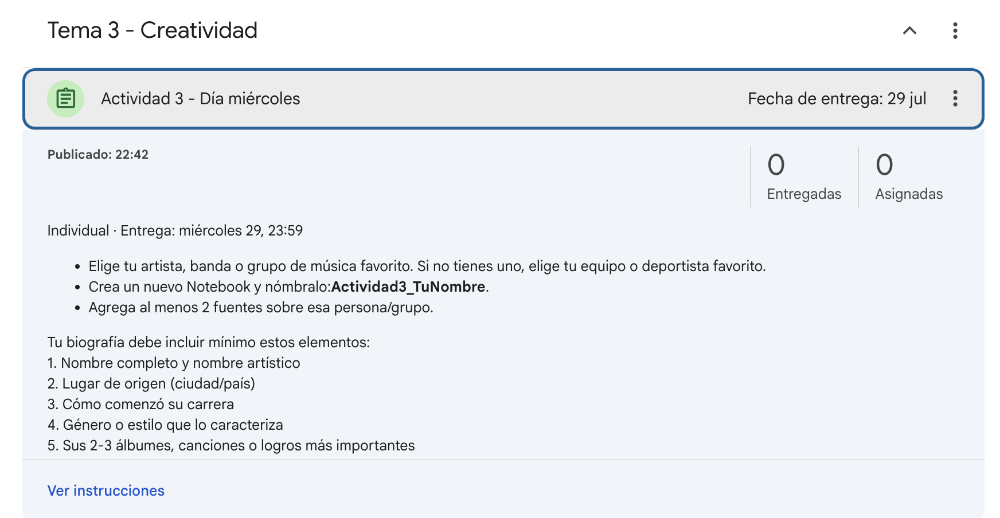

Repaso y recapitulación de la Actividad 2 - Día martes
La entrega fue un Notebook individual sobre un videojuego (Fortnite, Roblox, Minecraft o Genshin Impact), investigando cómo funciona la IA detrás de él, con al menos 2 fuentes y 3 prompts guardados.

Gemini con imágenes y archivos
Gemini puede analizar lo que le suban, no solo lo que le escriban. Si le suben una foto de una página del libro, puede identificar el tono del texto o resumir esa parte. Si le suben un documento largo, puede darles un resumen sin que tengan que leerlo completo. Esto es distinto a Notebook: aquí es una consulta rápida y puntual, no una fuente que se queda guardada.

Gemini para creatividad
Esta es la parte que conecta con lo que van a necesitar mañana y el viernes. Usando las herramientas de Studio que ya vieron en Notebook (Slide Deck, Video Overview, Infographic, Mind Map), pueden generar contenido visual con una dirección creativa clara: elegir una paleta de colores, un estilo de imagen, una estructura de presentación.
Gemini también puede generar imágenes originales para ilustrar ideas o conceptos, útil para portadas, fondos, o elementos gráficos de cualquier proyecto.

Límites y cuidado: qué NO hacer
La IA puede "alucinar": inventar información que suena creíble pero no es cierta. Por eso, antes de usar cualquier dato en una entrega o exposición, hay que verificarlo (revisando la referencia que da Notebook, o buscándolo en otra fuente).
Tampoco se debe compartir información personal con la IA (dirección, teléfono, contraseñas), y el uso dentro de la escuela debe ser siempre responsable: para aprender e investigar más rápido, no para copiar sin entender.

Actividad 3 - Día miércoles
- 1Elige tu artista, banda o grupo de música favorito. Si no tienes uno, elige tu equipo o deportista favorito.
- 2Crea un nuevo Notebook y nómbralo: Actividad3_TuNombre
- 3Agrega al menos 2 fuentes sobre esa persona/grupo.
Tu biografía debe incluir mínimo estos elementos:
| # | Elemento |
|---|---|
| 1 | Nombre completo y nombre artístico |
| 2 | Lugar de origen (ciudad/país) |
| 3 | Cómo comenzó su carrera |
| 4 | Género o estilo que lo caracteriza |
| 5 | Sus 2-3 álbumes, canciones o logros más importantes |
| 6 | Un premio o reconocimiento destacado |
| 7 | Un dato curioso poco conocido |
| 8 | Colores o estética visual que representen su imagen (para el diseño) |
| 9 | Al menos 2 imágenes relacionadas |
| 10 | Un video o clip corto relacionado |
| 11 | Por qué es tu favorito / qué significa para ti |
- 4Usa Studio para generar un Video Overview o un Slide Deck con toda esta información, cuidando el diseño y los colores del punto 8.
- 5Comparte tu Notebook y entrega el link en Classroom.

Actividad del libro (viernes)
Más allá del libro que les tocó, esta misma habilidad aplica en otras materias: resumir un texto largo, generar ideas para una tarea, o pedir que te expliquen un tema difícil paso a paso, siempre aplicando las 4 partes del prompt.

Check-in de lectura en equipo
Cierre rápido: cada pareja comparte qué llevan en su Notebook hasta ahora, y qué van a investigar mañana para la actividad del libro que se presenta el día viernes.